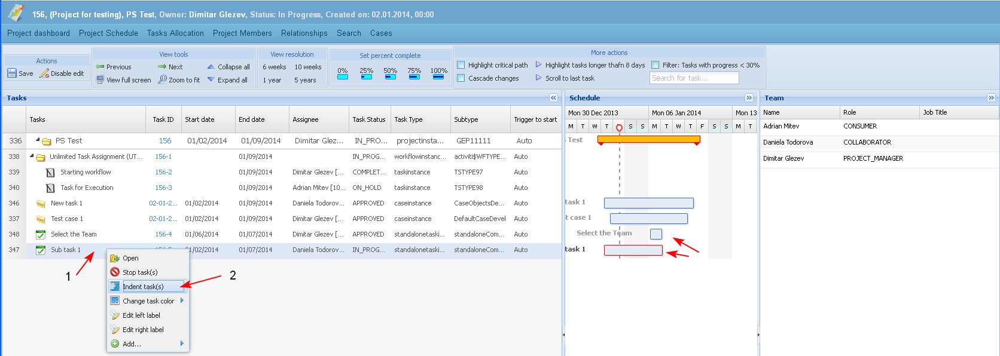
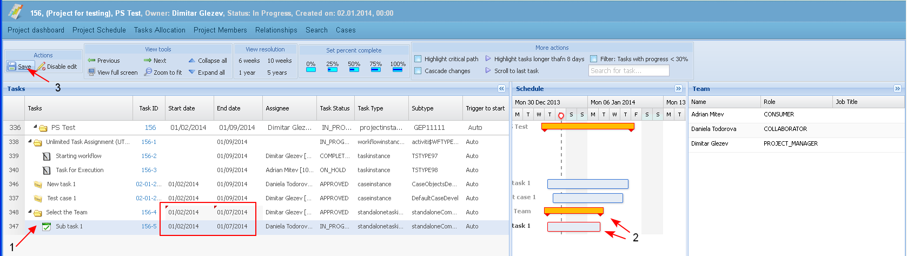
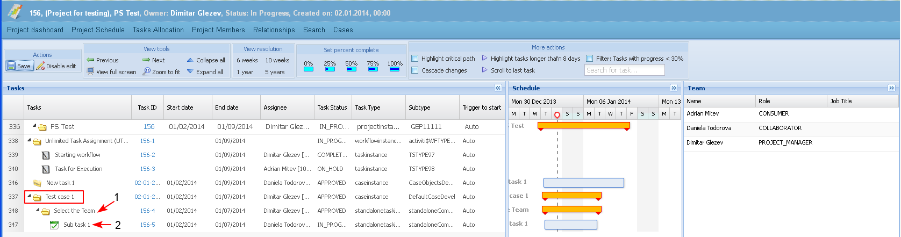

The user is able to create summary (holder) tasks and sub-tasks in the project schedule.
Preconditions
- The indention of sub-tasks of a "Workflow" holder task could not be changed.
- A task could be indented only one position compared to the above summary task.
- The task of type "Project" could not be indented.
- The user selects a task and then "Indent Task" (1-2).

- The selected task becomes a sub-task (1) .
- When the above task is 1 position outdented - then it automatically is transformed to summary (holder) task.
- When the above task is already indented then there is an existing summary task, which parameters only are recalculated.
- The duration of a summary task summarizes the total work time between the earliest start date and latest finish date of its sub tasks, but is not sum of all sub task durations (2).
- The start date of a summary task is automatically changed to the earliest start date of its sub tasks (2).
The user saves the changes clicking the button "Save" (3).

- When a summary task is indented one position (1), then all its sub tasks are also indented (2).

- When a task is in status different than "Submitted" then the "Indent" action on the task in the PS changes the relationship of type "Part of" of that task.
Example:
- Task1 is Part of Case A.
- Task1 is indented in the PS and becomes a child of Task2.
- A new relationship is created: Task1 is part of Task2 and the existing relationship between the case and the task is deleted.